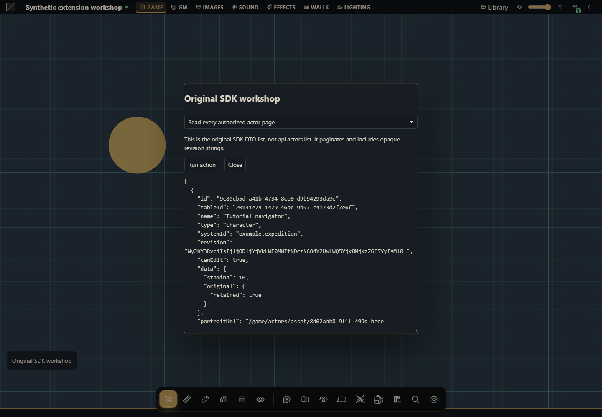

Maintain a module using the original host.call SDK
Concrete actor/token DTOs, opaque revisions and the remaining multipart/local operations.


The project you will build
Build an original-SDK module with real buttons for actor and token operations. Use a development campaign, an active scene and an original external system. These interfaces coexist with the domain API; their signatures and revision formats are different.
Target host: Gravewright 0.3.0. Actions run only when you click Run action, using the signed-in account. The demonstration panel is English. Each recipe specifies inputs and an observable result.
1. Create the files
Create a folder named sdk-compat. Save the complete files below as UTF-8, or download the project. manifest.json belongs at the root. No npm dependencies or JavaScript build is required.
sdk-compat/
manifest.json
main.mjs
recipes.mjs
styles.css
LICENSE.txtThe remaining original operations are implemented in file handling (asset.list/upload/download, actor.image.upload, card.asset.upload) and localization (locale.apply). Together these guides cover every operation in registry.json. Use the modern domain API for new modules unless you specifically need the multipart SDK.
2. Package, install and activate
From the project folder, run in PowerShell:
python -m json.tool manifest.json
python -m zipfile -c ../sdk-compat-1.0.0.zip manifest.json main.mjs recipes.mjs styles.css LICENSE.txt
python -m zipfile -l ../sdk-compat-1.0.0.zipOn Linux/macOS, replace python with python3 in the same commands. The archive listing must show manifest.json at its root. As installation owner, open Inside → Modules → Install module → Install from ZIP, select the ZIP and click Install. As GM, open the campaign, select its Gravewright button → Extensions and Activate version 1.0.0 of Original SDK workshop. Close that menu and click Original SDK workshop. See your first module for screen-by-screen instructions.
The package stays inactive until selected for the table. Test one demonstration extension at a time because their launchers share a position. For changed bytes, increment version to 1.0.1, build another ZIP, install and activate that version; do not edit installed files.
3. Run each recipe
Read every authorized actor page
This is the original SDK DTO list, not api.actors.list. It paginates and includes opaque revision strings.
async ({host,signal}) => {
const items=[];let cursor=null;
do {
const page=await host.call('actor.list',{limit:50,cursor},{signal});
items.push(...page.items);cursor=page.nextCursor;
} while(cursor&&!signal.aborted);
return items;
}Expected result: All readable actors in this campaign, reauthorized on each page.
How to verify: Compare IDs with the directory; use a player to check filtering.
Read one actor DTO and its data revision
Paste a readable actor UUID. Actor metadata and sheet data have different revision domains.
async ({host,signal},v) => ({
actor:await host.call('actor.read',{id:v.id},{signal}),
sheet:await host.call('actor.data.read',{id:v.id},{signal})
})Expected result: actor.revision and sheet.revision, each retained with its own response.
How to verify: Do not decode or interchange revision tokens.
Create a disposable actor through host.call
The domain API discovers the selected system type. The legacy create schema accepts name/type, not an arbitrary actor data payload.
async ({api,host,signal},v) => {
const type=(await api.actors.state({}, {signal})).actorTypes[0]?.id;
if(!type)throw new Error('Choose a system with an actor type');
return host.call('actor.create',{name:v.name,type},{signal});
}Expected result: The created actor DTO and its opaque revision.
How to verify: Find the same ID in Actors; retain it for the next recipes.
Rename with the legacy metadata revision
Use the disposable actor. changes contains only supported metadata changes.
async ({host,signal},v) => {
const before=await host.call('actor.read',{id:v.id},{signal});
return host.call('actor.update',{id:v.id,expectedRevision:before.revision,changes:{name:v.name}},{signal});
}Expected result: Same actor with the new name and a new metadata revision.
How to verify: A stale expectedRevision must yield conflict; reload instead of forcing it.
Preserve a complete actor JSON while changing one owned field
Use an external example system that accepts opaque original JSON, such as Example Expedition. workshop is owned by this example; do not overwrite fields belonging to another package.
async ({host,signal},v) => {
const before=await host.call('actor.data.read',{id:v.id},{signal});
const data={...before.data,workshop:{note:v.note}};
return host.call('actor.data.update',{id:v.id,expectedRevision:before.revision,data},{signal});
}Expected result: Updated data with all other top-level fields preserved.
How to verify: Read again and compare unrelated keys. A system-specific validator may reject unsupported fields.
Read token center coordinates and its own sheet data
Activate an existing scene and use a token from that scene. This package mounts scene.controls so the legacy scene scope is present.
async ({host,signal},v) => ({
token:await host.call('token.read',{id:v.id},{signal}),
sheet:await host.call('token.data.read',{id:v.id},{signal})
})Expected result: position is a center point in scene pixels, not gridX/gridY. Sheet data resolves linked or independent storage.
How to verify: Compare one linked and one snapshot token; never substitute actor data for the snapshot.
Move a token using its own opaque revision
Use a token you control and an in-bounds target center. The server converts scene pixels into its grid geometry.
async ({host,signal},v) => {
const token=await host.call('token.read',{id:v.id},{signal});
return host.call('token.move',{id:v.id,expectedRevision:token.revision,position:{x:v.x,y:v.y}},{signal});
}Expected result: Updated token position; movement validation and permissions still apply.
How to verify: Try another campaign token and a stale revision. Both must fail without moving it.
Update the token’s resolved data without replacing unrelated fields
For a linked token this edits actor data; for an independent token it edits its snapshot. Use only the original opaque-JSON example system.
async ({host,signal},v) => {
const before=await host.call('token.data.read',{id:v.id},{signal});
return host.call('token.data.update',{id:v.id,expectedRevision:before.revision,data:{...before.data,workshop:{note:v.note}}},{signal});
}Expected result: A new data revision in the correct document domain.
How to verify: Read source actor and both tokens; snapshot changes must not change its source actor.
Delete the disposable legacy actor
Remove only an unused actor created by this tutorial, with no scene tokens. New integrations should prefer the domain API, whose native deletion includes token/automation cleanup.
async ({host,signal},v) => {
if(!v.confirm)throw new Error('Confirm the disposable actor');
const actor=await host.call('actor.read',{id:v.id},{signal});
return host.call('actor.delete',{id:v.id,expectedRevision:actor.revision},{signal});
}Expected result: null from the original delete contract.
How to verify: Read again and expect not_found. Do not use this path as a replacement for native lifecycle cleanup.
4. Understand and adapt the complete files
main.mjs renders the launcher and form. recipes.mjs owns behavior: change the chosen recipe’s run function while keeping its signature. The form passes real number, boolean and File values, blocks overlapping requests and renders using textContent. It does not evaluate user-provided code. api, host, assets and storage belong to the mount; signal cancels work on deactivation. The modal stays open during pending work and is released when the mount aborts. Each business function remains responsible for revisions, permissions and transaction sequencing.
manifest.json
{
"id": "tutorial.sdk-compat",
"name": "Original SDK workshop",
"version": "1.0.0",
"sdk": {
"requires": ">=1.0.0 <2.0.0",
"tested": "1.0.0"
},
"entry": "main.mjs",
"description": "Concrete actor/token DTOs, opaque revisions and the remaining multipart/local operations.",
"author": "Gravewright documentation",
"license": "MIT"
}main.mjs
import {recipes} from './recipes.mjs';
export default {
start({styles}) { styles.use('styles.css'); },
register({register}) {
register("scene.controls", ({root,api,host,assets,storage,context,events,viewport,signal,onDispose}) => {
const doc=root.ownerDocument;
const button=doc.createElement('button');
button.type='button';button.className='tutorial-launcher';
button.textContent="Original SDK workshop";
root.append(button);
for(const type of ['pointerdown','mousedown'])button.addEventListener(type,event=>event.stopPropagation(),{signal});
let modal,pending=false;
button.addEventListener('click',event=>{
event.stopPropagation();
if(modal?.isConnected) { modal.focus();return; }
const panel=doc.createElement('section');
panel.className="tutorial-workbench-sdk-compat";
panel.setAttribute('role','dialog');panel.setAttribute('aria-modal','true');
panel.setAttribute('aria-label',button.textContent);panel.tabIndex=-1;
const title=doc.createElement('h2');title.textContent=button.textContent;panel.append(title);
const choose=doc.createElement('select');choose.setAttribute('aria-label','Action');
for(const recipe of recipes) {
const option=doc.createElement('option');option.value=recipe.id;option.textContent=recipe.label;choose.append(option);
}
const form=doc.createElement('form'),fields=doc.createElement('div');
const description=doc.createElement('p');
const run=doc.createElement('button');run.type='submit';run.textContent='Run action';
const close=doc.createElement('button');close.type='button';close.textContent='Close';
const output=doc.createElement('pre');output.setAttribute('role','status');output.setAttribute('aria-live','polite');
form.append(description,fields,run,close,output);panel.append(choose,form);
function renderFields(){
const recipe=recipes.find(item=>item.id===choose.value);fields.replaceChildren();
description.textContent=recipe.description;
for(const field of recipe.fields||[]) {
const label=doc.createElement('label');label.textContent=field.label;
const input=doc.createElement('input');input.name=field.name;input.type=field.type||'text';
if(field.type==='number')input.step=String(field.step??'any');
if(field.type==='checkbox')input.checked=!!field.value;
else if(field.type!=='file')input.value=String(field.value??'');
input.required=!!field.required;
if(field.accept)input.accept=field.accept;
label.append(input);fields.append(label);
}
output.textContent='';
}
choose.addEventListener('change',renderFields,{signal});renderFields();
form.addEventListener('submit',async event=>{
event.preventDefault();if(pending)return;
const recipe=recipes.find(item=>item.id===choose.value),values={};
for(const input of fields.querySelectorAll('input')) {
values[input.name]=input.type==='file'?input.files[0]:input.type==='checkbox'?input.checked:input.type==='number'?Number(input.value):input.value;
}
pending=true;choose.disabled=true;run.disabled=true;close.disabled=true;
for(const input of fields.querySelectorAll('input'))input.disabled=true;
output.textContent='Running…';
try {
const value=await recipe.run({api,host,assets,storage,context,events,viewport,signal,onDispose},values);
if(!signal.aborted)output.textContent=typeof value==='string'?value:JSON.stringify(value??null,null,2);
} catch(error) {
if(!signal.aborted)output.textContent=String(error.code||error.message||'unavailable');
} finally {
pending=false;
if(!signal.aborted){choose.disabled=false;run.disabled=false;close.disabled=false;for(const input of fields.querySelectorAll('input'))input.disabled=false;}
}
},{signal});
close.addEventListener('click',()=>void modal.close(),{signal});
modal=api.ui.openModal(panel,{canClose:()=>!pending||signal.aborted});
},{signal});
onDispose(()=>{button.remove();if(modal)void modal.close();});
});
},
stop() {}
};recipes.mjs
export const recipes=[
{
id:"pages",
label:"Read every authorized actor page",
description:"This is the original SDK DTO list, not api.actors.list. It paginates and includes opaque revision strings.",
fields:[],
run:async ({host,signal}) => {
const items=[];let cursor=null;
do {
const page=await host.call('actor.list',{limit:50,cursor},{signal});
items.push(...page.items);cursor=page.nextCursor;
} while(cursor&&!signal.aborted);
return items;
}
},
{
id:"read",
label:"Read one actor DTO and its data revision",
description:"Paste a readable actor UUID. Actor metadata and sheet data have different revision domains.",
fields:[
{
"name": "id",
"label": "Actor ID",
"value": "",
"type": "text",
"required": true
}
],
run:async ({host,signal},v) => ({
actor:await host.call('actor.read',{id:v.id},{signal}),
sheet:await host.call('actor.data.read',{id:v.id},{signal})
})
},
{
id:"create",
label:"Create a disposable actor through host.call",
description:"The domain API discovers the selected system type. The legacy create schema accepts name/type, not an arbitrary actor data payload.",
fields:[
{
"name": "name",
"label": "Actor name",
"value": "SDK workshop scout",
"type": "text",
"required": true
}
],
run:async ({api,host,signal},v) => {
const type=(await api.actors.state({}, {signal})).actorTypes[0]?.id;
if(!type)throw new Error('Choose a system with an actor type');
return host.call('actor.create',{name:v.name,type},{signal});
}
},
{
id:"rename",
label:"Rename with the legacy metadata revision",
description:"Use the disposable actor. changes contains only supported metadata changes.",
fields:[
{
"name": "id",
"label": "Actor ID",
"value": "",
"type": "text",
"required": true
},
{
"name": "name",
"label": "New name",
"value": "SDK navigator",
"type": "text",
"required": true
}
],
run:async ({host,signal},v) => {
const before=await host.call('actor.read',{id:v.id},{signal});
return host.call('actor.update',{id:v.id,expectedRevision:before.revision,changes:{name:v.name}},{signal});
}
},
{
id:"data",
label:"Preserve a complete actor JSON while changing one owned field",
description:"Use an external example system that accepts opaque original JSON, such as Example Expedition. workshop is owned by this example; do not overwrite fields belonging to another package.",
fields:[
{
"name": "id",
"label": "Actor ID",
"value": "",
"type": "text",
"required": true
},
{
"name": "note",
"label": "Original workshop note",
"value": "Original test note",
"type": "text",
"required": true
}
],
run:async ({host,signal},v) => {
const before=await host.call('actor.data.read',{id:v.id},{signal});
const data={...before.data,workshop:{note:v.note}};
return host.call('actor.data.update',{id:v.id,expectedRevision:before.revision,data},{signal});
}
},
{
id:"token-read",
label:"Read token center coordinates and its own sheet data",
description:"Activate an existing scene and use a token from that scene. This package mounts scene.controls so the legacy scene scope is present.",
fields:[
{
"name": "id",
"label": "Token ID",
"value": "",
"type": "text",
"required": true
}
],
run:async ({host,signal},v) => ({
token:await host.call('token.read',{id:v.id},{signal}),
sheet:await host.call('token.data.read',{id:v.id},{signal})
})
},
{
id:"token-move",
label:"Move a token using its own opaque revision",
description:"Use a token you control and an in-bounds target center. The server converts scene pixels into its grid geometry.",
fields:[
{
"name": "id",
"label": "Token ID",
"value": "",
"type": "text",
"required": true
},
{
"name": "x",
"label": "Center X in scene pixels",
"value": 160,
"type": "number",
"required": true
},
{
"name": "y",
"label": "Center Y in scene pixels",
"value": 160,
"type": "number",
"required": true
}
],
run:async ({host,signal},v) => {
const token=await host.call('token.read',{id:v.id},{signal});
return host.call('token.move',{id:v.id,expectedRevision:token.revision,position:{x:v.x,y:v.y}},{signal});
}
},
{
id:"token-data",
label:"Update the token’s resolved data without replacing unrelated fields",
description:"For a linked token this edits actor data; for an independent token it edits its snapshot. Use only the original opaque-JSON example system.",
fields:[
{
"name": "id",
"label": "Token ID",
"value": "",
"type": "text",
"required": true
},
{
"name": "note",
"label": "Original workshop note",
"value": "Snapshot-only note",
"type": "text",
"required": true
}
],
run:async ({host,signal},v) => {
const before=await host.call('token.data.read',{id:v.id},{signal});
return host.call('token.data.update',{id:v.id,expectedRevision:before.revision,data:{...before.data,workshop:{note:v.note}}},{signal});
}
},
{
id:"delete",
label:"Delete the disposable legacy actor",
description:"Remove only an unused actor created by this tutorial, with no scene tokens. New integrations should prefer the domain API, whose native deletion includes token/automation cleanup.",
fields:[
{
"name": "id",
"label": "Disposable actor ID",
"value": "",
"type": "text",
"required": true
},
{
"name": "confirm",
"label": "I selected the disposable actor",
"value": false,
"type": "checkbox",
"required": false
}
],
run:async ({host,signal},v) => {
if(!v.confirm)throw new Error('Confirm the disposable actor');
const actor=await host.call('actor.read',{id:v.id},{signal});
return host.call('actor.delete',{id:v.id,expectedRevision:actor.revision},{signal});
}
}
];styles.css
.gw-module-root[data-module-id="tutorial.sdk-compat"] .tutorial-launcher { position: fixed; left: 16px; bottom: 112px; z-index: 10; padding: var(--space-3); border: 1px solid var(--border); border-radius: var(--radius-md); background: var(--surface); color: var(--text); font-size: 14px; pointer-events: auto; max-width: min(440px, calc(100vw - 32px)); white-space: normal; }
.tutorial-workbench-sdk-compat { width: min(640px, calc(100vw - 48px)); padding: var(--space-5); font-size: 14px; }
.tutorial-workbench-sdk-compat label { display: block; margin: var(--space-3) 0; }
.tutorial-workbench-sdk-compat input, .tutorial-workbench-sdk-compat select { display: block; width: 100%; margin-top: var(--space-2); }
.tutorial-workbench-sdk-compat pre { max-height: 360px; max-width: 100%; overflow: auto; white-space: pre-wrap; overflow-wrap: anywhere; }
.tutorial-workbench-sdk-compat button { margin-right: var(--space-3); }LICENSE.txt
MIT License
Copyright (c) 2026 Gravewright contributors
Permission is hereby granted, free of charge, to any person obtaining a copy
of this software and associated documentation files (the "Software"), to deal
in the Software without restriction, including without limitation the rights
to use, copy, modify, merge, publish, distribute, sublicense, and/or sell
copies of the Software, and to permit persons to whom the Software is
furnished to do so, subject to the following conditions:
The above copyright notice and this permission notice shall be included in all
copies or substantial portions of the Software.
THE SOFTWARE IS PROVIDED "AS IS", WITHOUT WARRANTY OF ANY KIND, EXPRESS OR
IMPLIED, INCLUDING BUT NOT LIMITED TO THE WARRANTIES OF MERCHANTABILITY,
FITNESS FOR A PARTICULAR PURPOSE AND NONINFRINGEMENT. IN NO EVENT SHALL THE
AUTHORS OR COPYRIGHT HOLDERS BE LIABLE FOR ANY CLAIM, DAMAGES OR OTHER
LIABILITY, WHETHER IN AN ACTION OF CONTRACT, TORT OR OTHERWISE, ARISING FROM,
OUT OF OR IN CONNECTION WITH THE SOFTWARE OR THE USE OR OTHER DEALINGS IN THE
SOFTWARE.5. Permissions, failures and final test
Test read-only access, another scene/campaign, stale opaque revisions and cancellation. The original host.call options do not provide the domain command receipt contract: do not assume requestId makes every SDK operation idempotent. Never transplant a revision between actor metadata, actor data, token position and token data. All IDs must come from the authorized campaign state.
How to use AI to extend this project
Migrate this complete host.call module to the domain API on Gravewright 0.3.0. Match each DTO and signature explicitly, preserve snapshots and authorization, and explain which revision format and request receipt behavior changes. Deliver complete files and tests rather than renaming methods mechanically.